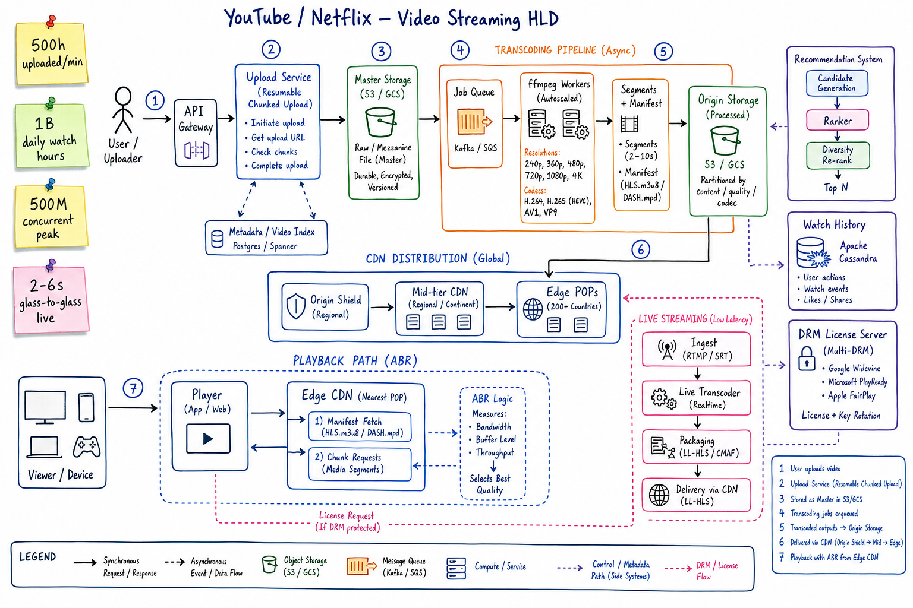
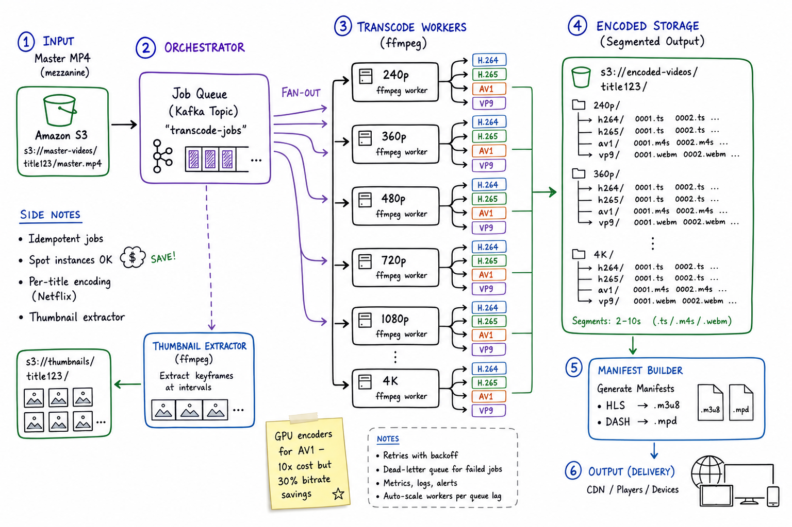
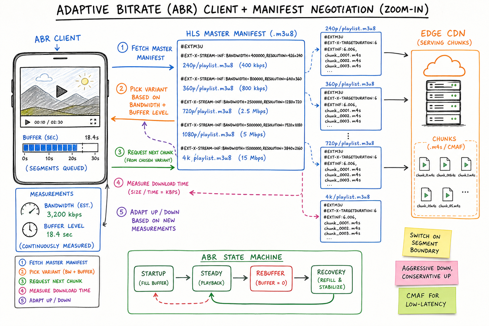

YouTube / Netflix // HLD
Global video streaming at planet scale: chunked resumable uploads, transcode fan-out to ladder of resolutions+codecs, HLS/DASH segmenting, adaptive bitrate playback driven by client measurements, tiered CDN, separate live-streaming low-latency pipeline, and recommendations as the engagement engine.

Whiteboard HLD: uploader streams chunks through Upload Service into S3/GCS master storage. Transcoding orchestrator fans jobs across ffmpeg workers producing a ladder of resolutions (240p–4K) and codecs (H.264/H.265/AV1/VP9), segmented for HLS/DASH. CDN tiers (origin shield → mid → edge) push and pull-through to 200+ POPs. Player negotiates ABR per chunk against bandwidth+buffer. Side systems: recommendation pipeline (candidate gen → ranker → diversity rerank), watch history (Cassandra), DRM license servers, dedicated live ingest path (RTMP/SRT → LL-HLS).
01 — Requirements
Functional
- Upload videos (any size, resumable, pause/resume)
- Transcode to multiple resolutions and codecs
- Stream to global users with adaptive bitrate (ABR)
- Watch history, resume-where-you-left-off
- Recommendations (home feed, "up next", search ranking)
- Live streaming with 2–6s glass-to-glass
- Offline downloads on mobile (Netflix); shorts/clips
Non-Functional
- Massive throughput: billions of watch hours/day, hundreds of millions concurrent at peak
- Low startup latency: <2s to first frame; <500ms p99 chunk fetch from edge
- High availability: 99.95%+; degrade quality before failing
- Global reach: POPs near every user; locally-cached hot content
- Cost-aware: egress is the dominant cost; cache hit ratio is the metric
- Durable masters: source video never lost; transcoded outputs reproducible
01a — Core Entities
| Entity | Key Fields | Notes |
|---|---|---|
| Video | video_id, owner_id, title, description, status (UPLOADING/TRANSCODING/READY/BLOCKED), duration_s, master_url | Master = mezzanine file in S3/GCS. status drives playback eligibility. |
| Encoded Variant | (video_id, resolution, codec) → segment_prefix, bitrate, manifest_url | One row per ladder rung. Manifest references all variants. |
| Segment | (video_id, variant, index) → cdn_url, byte_range, duration_s | 2–10s chunk. The actual thing the player fetches. |
| Manifest | video_id → HLS .m3u8 / DASH .mpd | Lists variants and their segments. Signed for DRM. |
| User | user_id, profile, sub_plan, region, language | Drives recommendations + DRM territory rules. |
| Watch Event | (user_id, video_id, ts) → position_s, device, quality | Time-series in Cassandra; fuels resume + reco + analytics. |
| Live Stream | stream_id, owner_id, ingest_url, status, started_at | Short-lived; chunks flushed as encoded; DVR window in S3. |
| Recommendation Row | (user_id, shelf_id) → [video_id…] | Precomputed offline; refreshed by online reranker. |
| DRM License | (user_id, video_id, ts) → key, policy | Issued per-session; bound to device. |
01b — API Design
Upload
POST /videos -> { video_id, upload_session_id, chunk_size }
PUT /uploads/{session}/chunks/{n} Content-Range: bytes a-b/total
POST /uploads/{session}/complete -> transitions video to TRANSCODING
GET /videos/{id} (metadata + variants once READY)
DELETE /videos/{id}
Playback (hot path)
GET /videos/{id}/manifest.m3u8 (HLS master playlist; signed)
GET /cdn/{path}/segment-{i}.m4s Range: bytes=... (chunk fetch)
POST /videos/{id}/watch { position, ts, device, quality } # fire-and-forget
GET /users/me/continue-watching -> [{video, position}]
POST /drm/license { video_id, device } -> license blob
Live
RTMP / SRT ingest: rtmp://ingest.region.cdn/live/{stream_key}
GET /live/{stream_id}/manifest.m3u8 (LL-HLS, chunked transfer)
The non-obvious contract: manifests are signed and short-lived; clients re-fetch on expiry. Chunk URLs include token + expiry to prevent hot-linking and enforce geo / DRM territory rules.
02 — Estimation
Uploads: 500 hours/min = 30K hours/hour
avg 1 GB master/hour -> 30 TB/hour ingest
Storage: master + 6 resolutions x 4 codecs = ~25x master size
-> petabytes/day, exabytes total
Watch hours: 1 B/day = 12 M concurrent average, 500 M concurrent peak
Bandwidth at peak: 500M x 5 Mbps avg = 2.5 Pbps egress <-- CDN problem
Chunk requests: 2-10s segments, ~10-50 req/sec/viewer = 5-25 B req/day
Recommendation: 1B daily viewers x 50 candidates retrieved = 50B/day candidate gens03 — Why It's Hard
- Egress dominates cost: petabits/sec at peak; cache hit ratio is the lever, not compute
- Transcoding is expensive: AV1 ~10× the CPU of H.264; per-title encoding tunes ladders per video
- Heterogeneous clients: 4K TVs, low-end Android, iOS, set-top boxes — each with different codec support
- Long tail: 80% of views are 1% of catalog; the other 99% must still be servable
- Live is a totally different system: ingest, chunked encoding, low-latency packaging — you can't reuse the VOD pipeline directly
- DRM territory rules: different licenses per country, per device, per studio
- Personalization at the edge: the manifest, the homepage, the "up next" — all must be personalized but cacheable enough
04 — Architecture
Uploader Viewer
| |
v v
API Gateway Edge POP (CDN)
| ^
v | (manifest + segments)
+----------------+ +-------------------+ |
| Upload Service |-->| Master Storage | |
| (resumable) | | (S3/GCS) | |
+----------------+ +-------------------+ |
| |
v |
+-----------------+ +-----------------+
| Transcoding |-->| Encoded Storage |--> Origin Shield --> Mid --> Edge
| Orchestrator | | (segments+manif)|
| + ffmpeg fleet | +-----------------+
+-----------------+
|
v
Kafka (video.ready) -> Search index, Reco, Notifications
Live: RTMP/SRT ingest -> Live Transcoder -> LL-HLS packager -> Edge
Side: Watch Service (Cassandra), DRM License Server, Reco Service (offline+online)
05 — Upload Pipeline
POST /videos creates row with status=UPLOADING; returns upload_session_id + chunk_size (typically 5–25 MB).Content-Range; server stores each as separate object; tracks received offsets. Lost connection? Client resumes from last acked offset.video.uploaded event to Job Scheduler / Kafka with reference to master file.Resumable uploads are non-negotiable. A 4-hour creator wedding video over flaky hotel WiFi will drop. Without resume, you lose the upload and the creator.
06 — Encoding / Transcoding

Zoom: master MP4 → orchestrator fans jobs across ffmpeg workers, one per (resolution, codec). Each emits 2–10s segments + a per-variant playlist. Manifest builder assembles HLS master .m3u8 and DASH .mpd. Thumbnail extractor pulls keyframes on the side.
Ladder & codec matrix
Resolutions: 240p, 360p, 480p, 720p, 1080p, 1440p, 4K
Codecs: H.264 (universal) - every device, ~baseline bitrate
H.265 / HEVC - ~30% smaller, Apple-friendly
VP9 - ~30% smaller, YouTube/Chrome
AV1 - ~50% smaller, expensive to encode (~10x H.264)
Per-title encoding (Netflix): pick the ladder per video based on complexity.
A talking-head documentary needs less bitrate than a CGI action movie.
Job orchestration
- One
transcodetask per (resolution, codec) tuple → embarrassingly parallel - Workers run on spot instances; if killed, job retried elsewhere → deterministic, idempotent outputs
- Segments uploaded directly to encoded-storage bucket, indexed by
(video_id, variant, segment_index) - Manifest builder runs once all variants complete; publishes
video.ready
The encode/transcode is itself an instance of the job scheduler problem — durable queue, retries, dead-letter, autoscaling workers per backlog.
07 — Adaptive Bitrate (ABR)

Zoom: ABR client measures bandwidth + buffer level each chunk, picks variant from the HLS master manifest, requests next chunk from the chosen variant playlist. State machine: startup → steady → rebuffer → recovery.
The HLS master playlist
#EXTM3U #EXT-X-STREAM-INF:BANDWIDTH=400000,RESOLUTION=426x240 240p/playlist.m3u8 #EXT-X-STREAM-INF:BANDWIDTH=800000,RESOLUTION=640x360 360p/playlist.m3u8 #EXT-X-STREAM-INF:BANDWIDTH=2500000,RESOLUTION=1280x720 720p/playlist.m3u8 #EXT-X-STREAM-INF:BANDWIDTH=5000000,RESOLUTION=1920x1080 1080p/playlist.m3u8
Switching algorithm (client-side)
- Measure throughput =
chunk_size / download_timeEWMA over last few chunks - Measure buffer level (seconds queued ahead of playhead)
- Aggressive down, conservative up: drop a tier the moment buffer dips; promote a tier only after sustained headroom — avoids oscillation
- Switch only on segment boundary (because each segment starts with a keyframe)
ABR is the user experience. Bad ABR = rebuffer = churn. Netflix's ABR (Buffer-Based / Per-title encoding) is a competitive moat, not a checklist item.
08 — CDN Distribution
Tiered hierarchy
Origin Storage (single bucket per region)
|
v
Origin Shield (regional) - first level of caching, protects origin
|
v
Mid-tier CDN (continental) - aggregates requests from many edges
|
v
Edge POPs (200+ globally) - serves the actual viewer
|
v
Viewer's ISP / mobile carrier
Push vs pull
- Pre-push popular content (new Stranger Things season, Olympics) to all edges before launch
- Pull-through on the long tail: first viewer in region triggers fill from upstream tier
- Netflix Open Connect: ship physical appliances to ISPs → near-zero transit cost
- YouTube: Google's own backbone + GGC (Google Global Cache) appliances at ISPs
Cache hit ratio at the edge is the metric that drives every cost and latency decision. Caching primer.
09 — Live Streaming
Glass-to-glass: 2–6s target
- Ingest: RTMP (legacy) or SRT (lower latency, FEC). Encoder publishes to
ingest.region.cdnwith a stream key. - Live transcoder: realtime ffmpeg, must keep up with wall clock. Produces a small ladder (often only 3–4 rungs to keep CPU budget).
- LL-HLS: CMAF chunks ~200ms with HTTP/2 chunked-transfer; clients fetch part-files as they're being written.
- DVR window: last N minutes kept in object storage so viewers can rewind / join late.
- VOD conversion: after stream ends, segments stitched into a normal VOD asset.
Live is the failure mode for normal VOD assumptions: you can't re-encode the past, you can't pre-push to edges, and audience can 100× in seconds (think Super Bowl half-time).
10 — Recommendation System
Two-stage funnel
- Candidate generation: collaborative filtering (user-user / item-item) and two-tower neural net (user embedding × video embedding via ANN like HNSW) → ~1000 candidates
- Ranker: deep model with hundreds of features (CTR, watch-time predictions, freshness, language, recency) → top 100
- Diversity reranker: avoid 10 similar videos; balance shelves; mix exploration
Offline + online
- Offline batch (daily): recompute embeddings, refresh candidates per user, populate Cassandra rows by user
- Online reranker (per session): apply real-time signals (just-watched, current device, time of day)
- Bandits for exploration: 5–10% of slots show non-greedy picks to gather signal on the long tail
11 — DRM & Storage
Multi-DRM
- Widevine (Chrome, Android), PlayReady (Windows, Xbox), FairPlay (Safari, iOS, tvOS)
- Content encrypted once with CENC (Common Encryption); different DRM systems issue different license blobs over the same encrypted media
- License server issues per-session license bound to device + territory + window
- Signed manifests + short-lived chunk URLs prevent hot-linking
Storage tiers
Master / mezzanine: S3 Standard (durable, the source of truth) Encoded variants hot: S3 Standard / Origin Shield (recent + popular) Encoded variants cold: S3 Infrequent Access / Glacier (long-tail catalog) Watch events: Cassandra (write-optimized, partitioned by user_id) Metadata: Postgres / Spanner (videos, users, channels)
12 — Scaling
- CDN is the scaling story — 99% of traffic never touches origin. Add POPs in any underserved region.
- Transcoder fleet: autoscale on Kafka backlog of
video.uploadedevents; spot instances OK because jobs are idempotent. - Metadata sharding: by
video_idfor video table; byuser_idfor watch history (Cassandra); by region for live streams. - Cassandra for watch events: append-only writes, time-series-friendly, easy to scale; not Postgres.
- Manifest caching: tricky — per-user signing means you can't fully cache, but you can cache the inner playlist and personalize only the signing wrapper.
- Per-title encoding: saves 20–40% bitrate per title by tuning ladder to content complexity. At Netflix scale, that's billions/yr.
13 — Edge Cases
- Mid-watch rebuffer → ABR drops quality immediately; if still starving, show spinner not error
- CDN POP outage → client falls back to next-nearest POP via DNS TTL or manifest-level fallback URLs
- Master upload corrupted → transcode fails consistently; status=BLOCKED with reason; creator notified to re-upload
- DRM license server slow → pre-fetch license at video open; cache for session duration
- Hot live event 100× spike → pre-warm POPs from manifest; coalesce upstream requests; consider P2P for VR/live (PeerTV style)
- Geo restrictions → enforce at edge via IP + license server; signed manifests refuse out-of-territory tokens
- Encoding bug on one variant → can re-encode just that rung; manifest references stable variant URLs
- Slow encoder backlog → upload completes but stays "Processing" for hours; show progress bar, ETA from backlog depth
- Mobile downloads expire → downloaded content has license TTL; phones must phone home before TTL to renew
14 — Real-World Equivalents
| Company | Notes |
|---|---|
| YouTube | Google Global Cache appliances at ISPs; Spanner for metadata; VP9 / AV1 push; Shorts as a separate pipeline. |
| Netflix | Open Connect (ISP appliances); per-title encoding; AWS for control plane, own CDN for delivery; chaos engineering. |
| Twitch | Live-first; lower transcode budget per stream; in-stream chat is a separate fan-out problem (FB Live Comments). |
| TikTok | Short-form; recommendation is everything (For You Page); CDN cost amortized over short clips. |
| Disney+ / HBO Max | Studio-grade DRM, multi-territory licensing; piggyback on AWS Elemental, Akamai, CloudFront. |
| Akamai / Cloudflare Stream | "Bring your own video" CDN-as-a-service; the parts of this stack you can outsource. |
15 — Interview Q&A
Why HLS / DASH instead of progressive download?
How do you scale the transcoder fleet?
How does the client choose which bitrate to request?
How do you keep CDN egress cost down?
How does live streaming differ from VOD?
How do you handle DRM across Chrome, iOS, Xbox?
How are recommendations served at scale?
How do you store watch history at scale?
user_id and clustered by ts DESC. Writes are firehosed (fire-and-forget from player), append-only, time-series-friendly. Resume-where-you-left-off = read the latest event for (user_id, video_id). Don't use Postgres — the write volume will crush it.